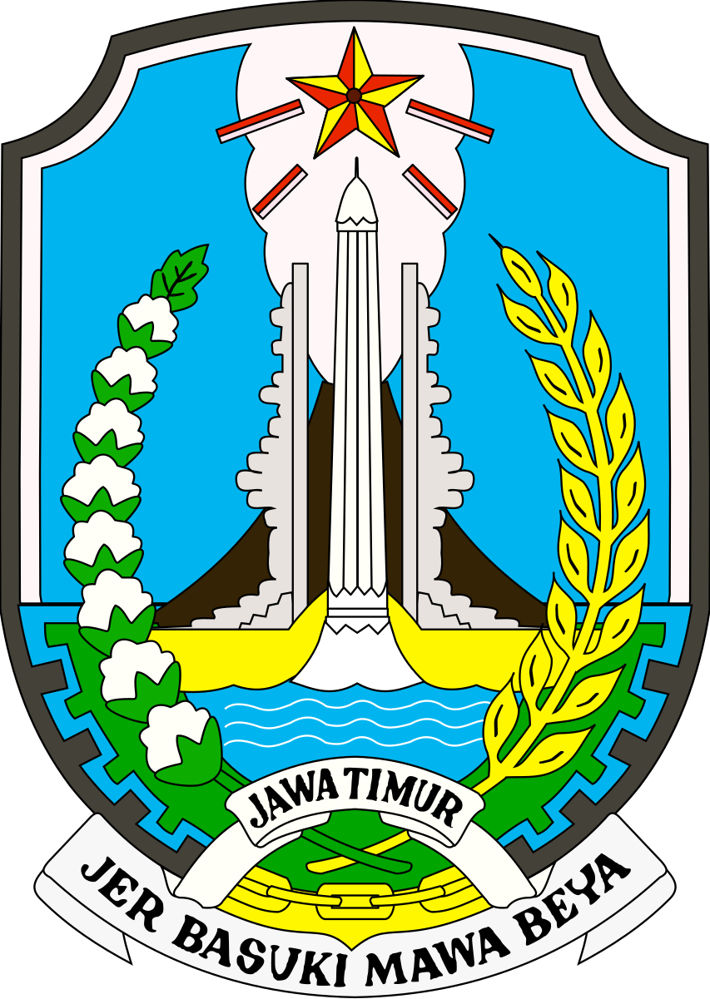
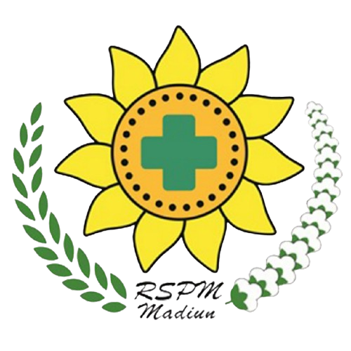

ASN Pemerintah Provinsi Jawa Timur
RS Paru Manguharjo
Rahayu, Sugeng Rawuh ꦫꦲꦪꦸ
Aji Leksono
Software Engineer
"Memayu Hayuning Bawana, Migunani Tumraping Liyan" — Bertekad menghadirkan rekayasa perangkat lunak dan arsitektur sistem informasi kesehatan digital yang tangguh, aman, dan mempermudah akses layanan masyarakat luas.

PEMERINTAH PROVINSI
JAWA TIMUR
JAWA TIMUR

RS PARU MANGUHARJO
PROVINSI JATIM
PROVINSI JATIM